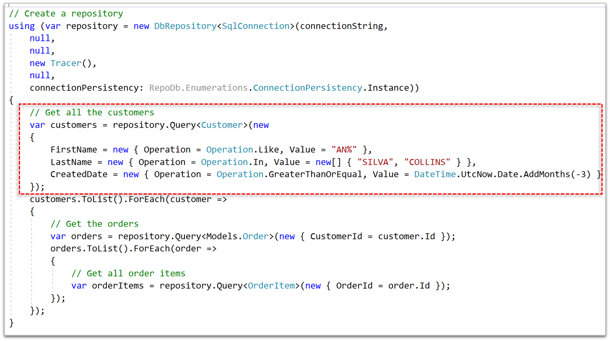

Trace¶
One of the unique built-in feature of the library is Tracing. It allows developers to do Debugging or Tracing on the operations while executing it against the database.
With Tracing, the developers can able to create its own Trace object and inject in the repository.
ITrace¶
This interface is used to mark the custom class to become a qualified Trace object.
TraceLog¶
This object is the one that holds the value of the repository operations if the Tracing is enabled.
CancellableTraceLog¶
This object is a deriving object from the TraceLog object, the only different is that, this object is being extended to support the cancellation of the executing operation. It is located at RepoDb namespace.
In the screenshot below, you can see a highlighted query expression.
If the trace is enabled, it would create a statement in the background. This statement can be modified during debugging.

And also, the parameters can be modified as well.

Custom Trace¶
Below is a sample customized Trace object.
public class NorthwindDatabaseTrace : ITrace
{
...
}
Below is the way on how to inject a Trace class in the repository.
var trace = new NorthwindDatabaseTrace();
var repository = new DbRepository<SqlConnection>(@"Server=.;Database=Northwind;Integrated Security=SSPI;", trace);
Once the customized Trace object has been injected, a breakpoint can be placed in any of the methods of the custom Trace class, it is debug-gable once the debugger hits the breakpoint.
Cancel¶
To cancel an operation, simply call the Cancel method of type CancelableTraceLog in any Before operation.
Below is a sample code that calls the Cancel method of the BeforeQuery operation if any of the specified keywords from the variable named keywords is found from the statement.
public void BeforeQuery(CancellableTraceLog log)
{
var keywords = new[] { "INSERT", "DELETE", "UPDATE", "DROP", "MERGE", "ALTER" };
if (keywords.Any(keyword => log.Statement.Contains(keyword)))
{
Console.WriteLine("A suspicious statement has been injected on the Query operations.");
log.Cancel(true);
}
}
By passing the value of true in the parameter when calling the Cancel method, it would signal the library to throw an Exceptions.CancelledExecutionException exception object back to the caller.